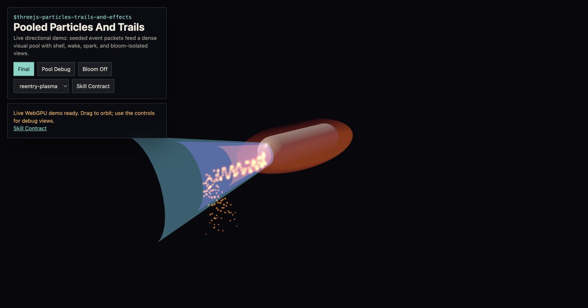

Primary implementation surface
These routes are generated from canonical source. Their exact status remains separate from implementation availability.

Live concept-proxy screenshot · not canonical evidenceAuthor workload-selected WebGPU/TSL particles, trails, and real-time effects in Three.js. Use for flow-conforming shells and wakes, reentry plasma, instanced sparks, timed dissolves, GPU particle pools, deterministic compaction, and conditional scene-relative HDR emission signals.
These routes are generated from canonical source. Their exact status remains separate from implementation availability.
This skill contributes to the following cross-skill owner graphs.
Particles live on the GPU: a compute pass integrates state in storage buffers, instanced geometry reads it directly — zero CPU round trips:
$$\mathbf v' = \mathbf v + \big(\mathbf g + \mathbf F_{field}(\mathbf p)/m\big)dt, \qquad \mathbf p' = \mathbf p + \mathbf v'\,dt$$Lifetimes drive everything through normalized age $u = t_{age}/t_{life}$: size, color ramp, and alpha are functions of $u$, and dead slots recycle through a dense-swap pool so the draw range stays tight. Reentry plasma conforms to the ship: emission points sample the hull surface, intensity follows a ram-pressure proxy $I \propto \rho\,v^2 \cdot \max(0, \hat{\mathbf n}\cdot\hat{\mathbf v})$.
Emission is scene-relative HDR through MRT: a spark is bright relative to the sun, and bloom reveals that hierarchy rather than inventing one.
Every image identifies what it proves. Page screenshots demonstrate the published presentation only; generated inputs demonstrate asset channels only; canonical acceptance still requires render-target readback and a schema-v2 bundle.
1 published imageThe complete SKILL.md as loaded by agents — verbatim, rendered.
Use $threejs-choose-skills preflight when an effect also needs custom
atmosphere, shadows, camera staging, temporal surfaces, precipitation, or
post-stack architecture. This skill owns object-space plasma, generated wakes,
analytic sparks, pooled debris, lifetime compaction, and scene-relative HDR
emission for effects.
When particles collide with world geometry or exchange physical sources, read
the shared
physics domain and interaction contract.
Consume a registered ColliderProxy with its canonical frame/origin,
topology/pose versions, swept bounds, physics material, residency, and error;
query SupportSurfaceSample separately with its descriptor,
sampleInstant: PhysicsInstant, footprint, validity, and per-channel error.
Weather-coupled dynamics consume the route's immutable
EnvironmentForcingSnapshot; aerodynamic force uses same-frame relative air
velocity plus density, while direction-only visuals make no force claim.
Emit typed InteractionRecord
values only to the owning domain. A depth hit, visual spark, or wake ribbon is
not an impulse, mass source, or equal-and-opposite reaction unless that record
and schedule exist.
Apply this section only when particle/effect state participates in physical coupling; a purely visual analytic effect remains local.
PhysicsGraphStage entries. Each execution carries its exact
PhysicsTimeInterval in PhysicsExecutionLedger; the render loop consumes
publications and must not double-dispatch a stage, discard catch-up debt, or
derive solver progress from rendered-frame delta.SurfaceExchange containing typed
InteractionRecord values. Source and reaction directions are explicit;
required reactions are atomic through InteractionReactionGroup. The batch
publisher owns sequence allocation and InteractionBatchLedger; the target
state-equation owner records exact-once acceptance in
InteractionApplicationLedger. Repeated render frames cannot replay a batch,
and skipped frames cannot drop it.PhysicsPresentationCandidate,
PresentedStatePair, and PresentationResourceLease; seal the target/view in
PhysicsPresentationSnapshot, then execute the immutable render plan recorded
by FrameExecutionRecord. Never render from mutable authoritative pool state
or reuse a leased generation before its completion join.QualityTransition. Render-only density, shading, or post quality
remains local only when physical observables, provider contracts, IDs, event
cursors, and error bounds are unchanged.| State or coupling | Fastest correct representation | Reject |
|---|---|---|
| Motion is a pure function of spawn data and time | Immutable spawn buffer; evaluate position, age, and size analytically in vertex TSL | A compute write of every particle every frame |
| State evolves independently per particle | One compute integration dispatch over a structure-of-arrays hot set | Object3D updates or matrix uploads |
| Particles collide with a field or surface | Compute state plus the field/depth representation that owns the collision | CPU readback of positions |
| Neighbor interactions matter | Spatial hash/grid or sort-and-scan before local interaction | An all-pairs O(N^2) shader loop |
Choose compaction independently. Stable slots plus an alive bit win when dead vertex/overdraw cost is below a scan/scatter. When a dense output materially saves work, use mark -> exclusive scan -> scatter into a second buffer and write the resulting live/indirect count. Dense-swap is valid only for a serialized removal queue or a proven atomic protocol with unique source and destination ownership; naively decrementing a shared tail from many invocations is a race.
Start with the architecture selected above, then scale quality inside it:
event envelope + seed
-> analytic evaluation or compute spawn/update into storage
-> stable alive slots or mark/scan/scatter compaction when it earns its cost
-> visible range rendered by SpriteNodeMaterial or instanced NodeMaterial
-> hull-conforming shell/wake displacement in TSL
-> scene-linear HDR output; optional selective emissive signal only when required
-> RenderPipeline bloom/other consumers and final output transform
Do not teach CPU-per-object effects at scale. The recurrent high-count path uses fixed-capacity spatial pages with seeded spawn packets and one draw per visible compatible representation page. Static parameters are generated once; analytic motion stays read-only, while compute updates only state that genuinely recurs. Compaction is optional and must remove more draw work than its scan/scatter costs.
Use references/particles-trails-and-effects-system.md for the full implementation contract: reentry shell/wake representation, compute pool layout, stable-slot/scan-compaction invariants, depth policy, budgets, diagnostics, and the replaced techniques from the historical implementation.
Canonical WebGPU lab: examples/webgpu-pooled-effects/. It contains prebound
SoA A/B state, ordered mark/two-level exclusive-scan/scatter kernels,
stable entity IDs backed by an atomic GPU free stack, deterministic event
expansion, indirect spark/debris render objects, and the hull-shell/wake stage.
Motion, appearance, and identity scatter are split so every kernel stays at or
below seven storage-buffer bindings. Its CPU oracles prove invariants only; canonical
acceptance still requires the native-browser readback/timing evidence named by
lab.manifest.json. Indirect meshes retain frustum culling through conservative
event-envelope bounds, and evidence keeps pool, draw-consumption, hull,
dissolve/shadow, depth, and emissive claims separate.
Legacy WebGL implementation (deprecated, do not extend): examples/reentry-plasma/reentry-plasma.js
Historical rename only: PostProcessing was renamed to RenderPipeline; new
systems use RenderPipeline.
WebGPURenderer from three/webgpu; call await renderer.init().three/tsl with SpriteNodeMaterial,
MeshBasicNodeMaterial, MeshStandardNodeMaterial, or
MeshPhysicalNodeMaterial.Fn().compute(count), queued renderer.compute(), storage()
nodes, StorageInstancedBufferAttribute
for instance-visible state, and StorageTexture only when the effect is a
texture field.InstancedMesh or sprite batches backed by storage attributes.
Stable slots draw a capacity/last-occupied range and reject inactive records;
dense GPU compaction publishes an indirect instance count through
IndirectStorageBufferAttribute + geometry.setIndirect(). Do not read back
a GPU count to set mesh.count in the frame loop.RenderPipeline, pass(), conditional mrt(),
outputColorTransform or renderOutput(). Full-scene HDR bloom needs no
emissive MRT; selective bloom allocates it only with a proven consumer,
transparent blend contract, and tile-traffic A/B.BloomNode for bloom, TRAANode when the post stack
needs temporal reprojection, GTAONode for shared scene grounding, and
$threejs-scalable-real-time-shadows for CSMShadowNode / TileShadowNode decisions.Every compute/storage/MRT particle-and-effect system includes this gate:
await renderer.init();
if (renderer.backend.isWebGPUBackend !== true) {
throw new Error(
'WebGPU is required for the canonical particle/effect path; route explicit fallback teaching to threejs-compatibility-fallbacks.'
);
}
Quality tiers preserve the effect mechanism and change representation:
| Tier | State | Shell/wake | Field/post policy |
|---|---|---|---|
full |
analytic or recurrent as required | all mechanism layers that pass isolation tests | keep only sampled field bands; post follows authored HDR signal |
balanced |
same dynamics with bounded active windows/cadence | merge layers below the image-error gate | lower field/history extent after temporal tests |
budgeted |
prefer analytic state and stable slots | one primary representation plus necessary transients | omit optional recurrent fields/post |
minimum |
immutable/analytic where possible | primary silhouette/emission cue | no optional per-frame field update |
Pool cap, layers, bands, and post scale are workload outputs. They remain Authored trials until target-context measurement and the visual contract admit them; no count maps universally to a device class.
Math.random from spawn paths.SpriteNodeMaterial handles camera-facing sparks and instanced
NodeMaterial meshes handle debris and hull-conforming shells.
If you see WebGPU point-size artifacts, replace point primitives with sprites
or instanced quads.emissive contract and bloom reads that texture.
In either route the beauty path stays legible when bloom is disabled.
If you see bloom-only shape, fix material emission before post tuning.| Work | Cost model and required counter |
|---|---|
| analytic instances | immutable seed/parameter bytes; zero simulation dispatch and hot writes |
| independent recurrent state | N_live * dynamicStrideBytes hot state and ceil(N_active/workgroupSize) invocations per solver stage |
| deterministic compaction | mark + exclusive scan + scatter traffic, or stable inactive slots; record holes, moved records, and scan bytes |
| rendering | one draw per geometry/material/depth/blend class after actual batching; record submitted and visible instances |
| transparent effects | covered pixels times mean/p95 layers per pixel; triangle or instance count alone is insufficient |
| post | exact bloom/history extent, mip chain, format, reads/writes, and peak live slots |
Use chunked bounds and per-patch visibility for large fields. Avoid a single unculled monolith unless the effect is camera-attached and its bounds are explicitly validated.
Record the workload tuple {N_active, strideBytes, solverStages, compactionMode, coveredPixels, layersPerPixel, drawClasses, postExtent} and
measure contemporaneous whole-frame p50/p95 plus paired marginal A/B cost on
the named target. Include scan/scatter, transparent fragments, attachment
traffic, peak live memory, and sustained thermal behavior. Choose the largest
workload whose visual-error gates and complete scene allocation both pass.
SRGBColorSpace; HDR/EXR radiance
remains loader-declared linear. Data textures, masks, noise, LUTs, and
storage-generated fields use NoColorSpace/linear.HalfFloatType working buffers until the final transform.outputColorTransform, or explicit renderOutput() when a
late post node needs transformed input.Use $threejs-dynamic-surface-effects only for screen-space frost, thaw, and
touch-history masks. Use $threejs-rain-snow-and-wet-surfaces for falling rain or
snow, splash flipbooks, and weather events that alter ground materials. Use
$threejs-procedural-motion-systems for authored motion timelines, staging debris,
and event kinematics. Use $threejs-camera-controls-and-rigs for camera-relative
readability and velocity framing. Use $threejs-bloom and
$threejs-image-pipeline when the shared post stack or exposure path is the
primary task.
Preserved concept proxies and generated-asset previews. They are excluded from primary completion counts and link to the canonical lab through the schema-v2 registry.